Pests & Disease Control
No Powdery Mildew

No Powdery Mildew™ is your 100% safe & effective way to attack, control & prevent your powdery mildew outbreak immediately up to day of harvest. No Powdery Mildew™ is a scientifically advanced, natural plant oil and extract technology that was developed with the most advanced nano surface technology that attacks the powdery mildew spores at the mycelium. No Powdery Mildew™ provides ULTIMATE POWDERY MILDEW PROTECTION POWER while leaving your valuable fruits and vegetables free from harmful chemicals, residues, aroma, or tastes
No Spider Mites
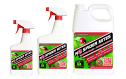No Spider Mites quickly and safely kills spider mites on plants. It is ideal for the hobbyist or commercial grower. 100% Organic! Our 16-ounce No Spider Mites™ size is perfect coverage to kill spider mites on up to six (6) 24” inch plants. This includes the initial application upon identifying a spider mite infestation and also includes the second light overcoat application anytime on days four through seven.
Actinovate
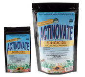Actinovate® for Lawn & Garden contains a high concentration of a patented beneficial microorganism. When applied, the Actinovate® microbe grows on the plant’s roots and leaves, living off the plant’s by-products while at the same time attacking harmful disease causing pathogens. This natural product effectively suppresses and controls a wide range of foliar and root diseases.
AzaMax
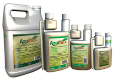AzaMax™ is a natural product with a broad spectrum of pest control. It contains Azadirachtin A & B as active ingredients and more than 100 limonoids. AzaMax™ does not use hard chemical solvents and fully uses food grade formulation ingredients. It is an antifeedant and insect growth regulator which controls pests through starvation and growth disruption. Effectively controls spider mites, thrips, fungus gnats, aphids, whiteflies, leaf miners, worms, beetles, leafhoppers, scales, mealy bugs, nematodes and other soil borne pests.
Doktor Doom Fogger
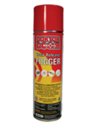A total release fogger for use in homeowner greenhouses, fruit and vegetable storage areas and indoor gardening areas. Can be used with all ornamental plants, flowers, fruits and vegetables. Used for controlling fungus gnats, spider mites, two-spotted spider mites, aphids, whiteflies, scale, mealy bugs and thrips. No residuals. Pyrethrum breaks down within hours. No restriction as to where it can be sold (Does not carry a commercial registration). It is safe to use up to a couple of days before harvest.
Doktor Doom Spider Mite Knockout
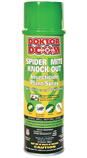Doktor Doom® Spider Mite Knock Out® is a .20% pyrethrin formula. This formula is 19 times stronger in active ingredient pyrethrin than any soap based insecticides and 10 times stronger than any formulations that contain Pyrethrin & Piperoynl Butoxide. Piperoynl Butoxide is a synergist which enhances the killing power of Pyrethrin and it is not approved for organic gardening. Unlike soap based products which need to be applied liberally to the plant in order to drown the insects Doktor Doom® Spider Mite Knock Out® kills the pests on contact with just a light misting on the foliage. Apply the Doktor Doom® Spider Mite Knock Out® to the underside of the leaves and then fog the room with a Doktor Doom® Fogger. The smell of Pyrethrin flushes out and eradicates insect pests on contact.
Sticky Whitefly / Aphid Traps
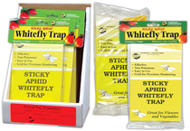The Sticky Whitefly Traps do the following things: Protect plants from Whiteflies, Aphids and other flying insects. Last all season, even in rain, until completely coated with insects. Non-poisonous and easy to use.
Sticky Thrip Leafminer Trap

Protects plants from Thrips and Leafminers. Excellent protection for roses. Hang at plant level. Place traps every 7 feet apart or at end of each row.
Monterey Takedown Garden Spray
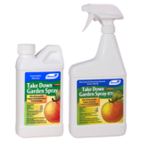A ready-to-use insecticide containing natural pyrethrin plus canola oil. Good replacement for Dursban® or diazinon products. Use on vegetables, fruits, houseplants, ornamentals, etc. Controls aphids, beetles, mealy bugs, caterpillars, plant bugs, etc. Dormant and growing season insect spray. Insecticide from plants for plants. Does not persist in the environment. Kills all stages of insects, including eggs.
Monterey Garden Indoor Spray
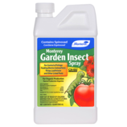For control of foliage feeding worms (caterpillars), thrips, fire ants and other listed pests in: Lawns, Outdoor Ornamentals, Vegetables, Apples, Citrus and Stone Fruit. Contains spinosad, produced by fermentation. New chemistry for insect control. Can be used on vegetable, fruit crops, ornamentals, and turf. Controls caterpillars as well as beetles, leafminers, thrips, beetles and more!
Monterey Neem Oil
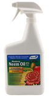Ready to use (RTU) formulation for organic gardening. Has both fungicidal and insecticidal properties to control Black Spot, Powdery Mildew, Spider Mites, Aphids, Whitefly and more. Use on roses, houseplants, ornamental trees and shrubs, fruit & nut trees and vegetables.
Tree Tanglefoot Pest Barrier
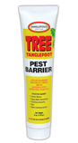Tree Tanglefoot Pest Barrier is effective against crawling insects who must reach the tops of trees in order to feed, mate, or deposit eggs. Such insects include cankerworms, gypsy moth caterpillars, army and tent caterpillars, ants, obscure root weevils and pecan weevils, tussock moths and climbing cutworms. Tree Tanglefoot Pest Barrier provides the perfect solution to protecting your valuable trees and reducing future populations of these pests. As the insects climb up over the sticky material, they become trapped without escape.
Serenade Garden Disease Control
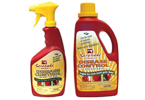Controls bacterial spot, powdery mildew, rust, gray mold, leaf blight, scab and more. For home gardeners, Serenade® Garden Disease Control is the safe, natural, broad spectrum, effective fungicide that controls harmful garden diseases and is approved for organic gardening. Same effective active ingredients used by 1000's of commercial growers. Broad spectrum control of fungal and bacterial diseases. No weather or timing restrictions for application. So safe, you can treat, pick and eat fruits, vegetables or flowers the same day. No phyto-toxicity issues.
Organicide 3-in-1 Garden Spray
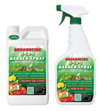A nature-safe, organic spray oil effective on a wide variety of insects, mites, armored and soft scales and certain fungal diseases. It is insecticidal to the eggs, larvae, and nymphs of insects and adults of soft bodied insects. Controls a wide range of mite and insect pests, and certain fungal diseases such as powdery mildew, black spots on roses, helminthesporium and greasy spots on citrus.
Don't Bug Me
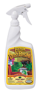Don’t Bug Me® is a fast, effective solution for most common garden pests. Because its active ingredient is Pyrethrum, which is derived from chrysanthemum flowers, it can be applied up to the day of harvest on any fruit or vegetable. Don’t Bug Me® kills aphids, whitefly, and other insects on contact by damaging their nervous systems, and even at lower levels it will keep pests away.
Safer Insect Killing Soap
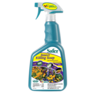Use on houseplants, ornamental foliage plants, flowering plants, and fruits and vegetables. Kill aphids, mealy bugs, spider mites, and whiteflies.
Safer Garden Fungicide
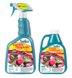Can be used on fruits, flowers, vegetables, flowering plants, and ornamentals. Controls and prevents black spot, rust, leaf spot, and powdery mildew on roses. Contains sulfur.
Pyrethrin
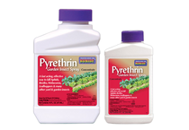Natural Pyrethrin in a concentrated formula for economical, natural, broad spectrum garden insect control.
SNS 203
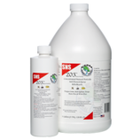Kills and Repels Fungus Gnats, Root Aphids, Thrips, Shore Flies and White Flies. SNS-203™ Concentrated Natural Pesticide Soil Drench and Foliage Spray is made up of pure Rosemary and Clove botanical extracts.
How it Works:
SNS-203™ Concentrated Natural Pesticide active ingredients cause the pests to dehydrate and dry up the ingredients also attack fungus & algae to reduce the food source for the pests. When used as a foliage spray or a soil drench SNS-203™ will control and eliminate Greenhouse Thrips, Fungus Gnats, Root Aphids, White Flies and Shore Flies.
SNS 209
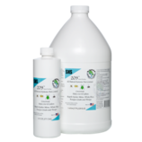Safely & Easily Make Your Plants Resistant To Pests! SNS-209™ All Natural Systemic Pest Control Concentrate provides a barrier for plants to protect them against damaging insects.
How it Works:
Spider mites, White flies, Nematodes, Scales and other insects destroy plant cells by sucking out their fluids or chewing up the cell walls. SNS-209™’s unique formula works by allowing the plant to uptake a small amount of rosemeric acid from the rosemary plant. As the plant distributes the rosemeric acid throughout its cell walls, a barrier is soon constructed. When an insect starts to suck or chew on the plant, it comes in contact with the rosemeric acid and causes the insect to stop eating, move on or die.
SNS 217C
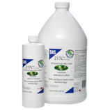Say Good-bye To Spider Mites! SNS-217C™ Kills Mites & their eggs SNS-217™ is fully biodegradable and non toxic to animals. Safe and Effective!
How it Works:
SNS-217™’s unique formula works by providing a barrier which is harmless to the plant, but fatal to the mites. The natural salts and fatty acids derived from Rosemary extracts disrupt the insect cell structure and increase the permeability of its membranes. Cell contents then leak from damaged cells and the spider mites quickly dehydrate and die. SNS-217™ Spider Mite Control kills the spider mite eggs by coating the eggs with an oily shield that disrupts the respiration to the egg; therefore no hatching will occur, they will just dry out.
SNS 244C
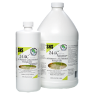Kills Fungus & Mildew and Is Highly Effective For the Control of a Broad Spectrum Of Vegetable, Fruit & Ornamental Plant Fungal Diseases
How it Works:
Airborne ‘pathogenic’ or disease causing fungi get inside the plant either by contacting its skin (epidermis), or by growing in through the plant’s breathing holes (stomata). Then they either poison and kill the plant cells before absorbing food from them or simply steal nutrients from the living cells. Some fungi live in the soil and enter into the roots. They can either block the water-conducting cells or kill them, causing the plant to wilt. In many cases the plant is seriously damaged or may even die. As a topical spray SNS-244™ Natural Fungicide kills the fungus through a biochemical interaction on the spores.
goGnats
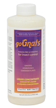goGnats is a poison-free alternative for the control of soil-fungus gnats, mites, aphids, moths, and other garden and hydroponic pests. goGnats liquid may be used as a plant and area spray, added to nutrient reservoirs or used as a soil drench. For hydroponics, it is recommended to add directly to reservoirs on a regular basis as part of a plant maintenance program.
Nukem
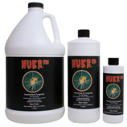This breakthrough formula is a multi-purpose insecticide and fungicide that kills the eggs, larvae, juvenile and adult insect that feeds on and ultimately kills plants. Its target is all species of Spider Mites, Thrips, Whitefly, Mealy Bugs, and other plant insect parasites. Nuke Em's formula does not include surfactants, soaps or oil for the obvious reasons. Insects, mildew and mold can't become immune to Nuke Em's effects. Its unique formula is comprised of 100% food grade ingredients that are commonly found in every day food products like bread!
Growers Edge Magnifier
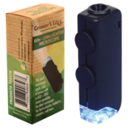A very powerful illuminated pocket microscope offers adjustable magnification from 60x - 100x. Identify even the smallest pests with this microscope. Includes batteries and protective case. Actual size of microscope is 1 ¼” wide by 3¼” tall.

Powerful 40x lens. Unique, compact folding design with durable casing. Excellent illumination on specimen provided by two 6500k LED’s. Can be used to identify plants, and potential garden pests. On/off switch for the two LED lights. Batteries included.
The Zorb
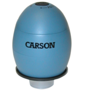The zOrb from Carson Optical is a Digital Microscope with an integrated camera that displays the magnified image right on your computer screen. The impressive 35x Magnification (14" monitor) allows you to see details of ordinary objects you never knew existed! The built-in internal illuminator ensures a clear and bright image. Capture an image to keep using the built-in 640 x 480 resolution digital camera. You can even capture close-focus video with the zOrb! The zOrb is compatible with Microsoft Windows 98SE, ME, 2000, XP, XP Service Pack
Bug Screens
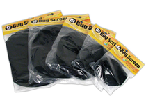Active carbon inserts are proven to keep most bugs and pollutants from entering grow room. Minimal air flow restriction. Easily slips on and off inline fans. Mildew and UV resistant. Custom fit 4, 6, 8, 10 and 12 inch sizes.
Our Product Line
- Reflectors
- DE Reflectors
- Electronic Ballasts
- Magnetic Ballasts
- Commercial Greenhouse Fixtures
- Complete Systems
- Fluorescent Lighting
- LED Lighting
- Lamps
- Lighting Components
- Environmental Controllers
- Ventilation/AC/Heating
- Air Purification
- Timers & Instruments
- Nutrients
- Pest & Disease Control
- Growing Media
- Indoor Greenhouses
- Trays / Reservoirs / Growsystems
- PC/EC/TDS Meters & Solutions
- Chillers / Heaters / Purification
- Light Movers & Hangers
- Safety Equipment
- Water Treatment
- Leaf Shines & Washes
- Pumps & Irrigation
- Sprayers & Wands
- Growing Accessories
- Hand Tools
- Reflective / B&W Films
- Pots & Containers
- Books / DVD's